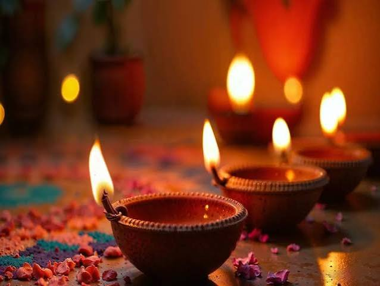
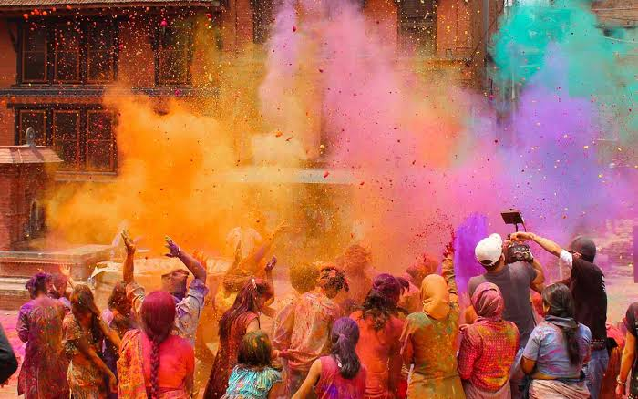

Diwali is the beautiful festival of lights celebrated by millions of people.The word Diwali means "*A row of lights*" in the ancient Sanskrit language.People celebrate it to show that good always wins over evil and light wins over darkness.During Diwali, Families clean their houses and decore them with color clay lamps called Diyas
Onam, the national festival of Keralam, is an annual harvest and Hindu cultural festival celebrated mostly by the people of Keralam and is traditionally associated with the legend of the benevolent Asura king Mahabal, whi once Keralam, returning each year to visit his people

Holi is major Hindu festival of colours, love and spring.It celebrates the love between Radha and Krishna.It widely celebrated Across India and Nepal as the festival of colours